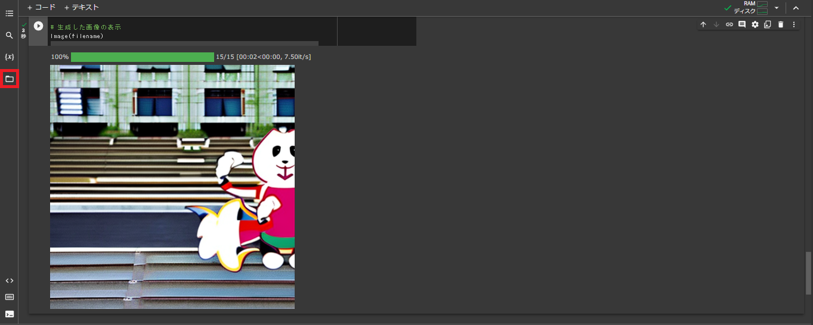

目次
0. 準備するもの
- パソコン
- Googleアカウント （普段使用しているもので構いません）
1. プログラムが使えるようにしよう
最初に、プログラムを書くための環境を整えます。
まず、下の「ファイルをダウンロード」から、今回使用するファイルをダウンロードしてください。
ファイルをダウンロード
次に、下の「Googleドライブにアクセス」から、お手持ちのGoogleでログインして、Googleドライブのサイトを表示させます。
Googleドライブにアクセス
その後、Googleドライブ内に、先ほどダウンロードしたファイルをアップロードします。
最後に、アップロードしたファイルをクリックして開きます。
これで、プログラムを書くための環境が整いました!
2. 必要な情報の読み込み
ここからは、実際にプログラムを動かしていきます。
まず、問題なくプログラムを動かすために、少し設定を変更します。
画面上部左上の「編集」をクリックし、「ノートブックの設定」をクリックします。
「ハードウェア アクセラレータ」の項目を「GPU」に変更し、「保存」をクリックします。
次に、ライブラリのインストールの項目で、再生ボタンをクリックします。
プログラムの実行が完了したら、次のステップに進みましょう。
3. 作りたい画像の雰囲気を決めよう
作りたい画像の雰囲気を決めましょう。
画像の雰囲気は、AIが事前に学習したデータである、モデルを選択することで決めることができます。
「model_id」の項目から、作りたい画像の雰囲気を選びます。
項目の詳細は、以下の通りです。
stabilityai/stable-diffusion-2
実写のような画像を生成することができるモデルです。
公式では、以下のような画像が生成されることが紹介されています。

CompVis/stable-diffusion-v1-4
こちらも、実写に近い画像を生成することができるモデルです。
公式では、以下のような画像が生成されることが紹介されています。

詳細はこちらから
hakurei/waifu-diffusion
アニメのような画像を生成することができるモデルです。
公式では、以下のような画像が生成されることが紹介されています。

詳細はこちらから
prompthero/openjourney
アニメのような画像を生成することができるモデルです。
公式では、以下の右側ような画像が生成されることが紹介されています。

詳細はこちらから
モデルを選択したら、再生ボタンをクリックして実行しましょう。
4. AIに作らせたい画像を指示しよう
ここでは、AIに作らせたい画像をテキストで指示します。
まず、「textja」の項目に、作りたい画像を日本語で入力します。
または、「texten」の項目に、作りたい画像を英語で入力しても構いません。
入力し終わったら、再生ボタンをクリックして実行しましょう。
5. 画像を出力しよう
ここでは、各パラメーターを調整して、AIに作らせたい画像を出力します。
まずは、「seed」と「guidance_scale」の項目を設定しましょう。
設定内容は、以下の通りです。
seed
乱数のシード値を設定します。
この値を変更すると、生成される画像が変わります。
また、この値を変更すると、同じテキストを入力しても、生成される画像が変わります。
guidance_scale
画像の雰囲気を調整することができます。
この値は、指示したテキストの厳密さを調整することができます。
この値を変更すると、生成される画像が変わります。
最後に、設定し終わったら、再生ボタンをクリックして実行しましょう。
6. 完成！

これで、AIに作らせたい画像を出力することができました。
生成した画像は、左端の「ファイル」の項目に保存されています。
©和歌山大学クリエゲーム制作プロジェクト 二神 2023年5月2日